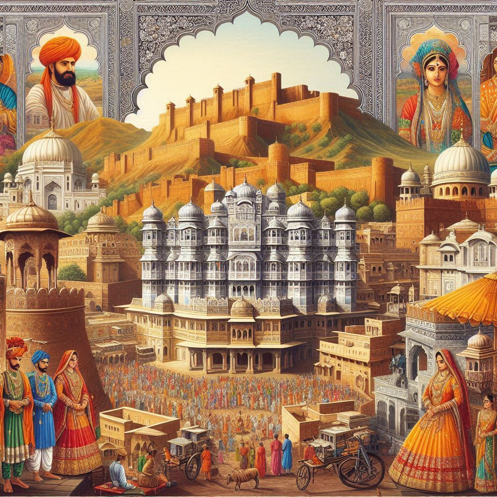
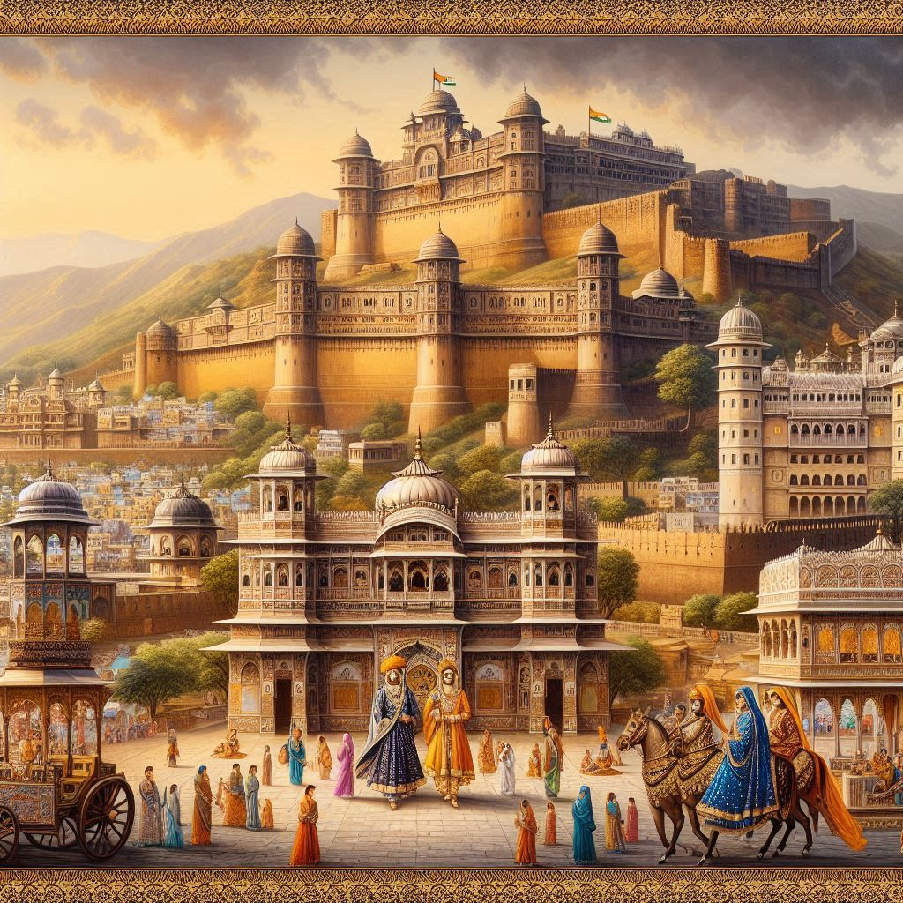

History of Rajasthan
Rajasthan, meaning "The Land of Kings," has a rich and vibrant history shaped by its strategic location, warrior culture, and artistic legacy. The state has witnessed the rise and fall of numerous kingdoms, empires, and dynasties over the centuries.
Ancient Period
- Prehistoric Era: Rajasthan has evidence of human habitation dating back to the Stone Age. The Indus Valley Civilization had settlements in parts of Rajasthan, such as Kalibangan, which was known for its advanced urban planning.
- Vedic Period: Rajasthan was part of the Vedic civilization, with references to regions like Matsya and Surasena in ancient texts.
Medieval Period
Rajasthan's medieval history is marked by the emergence of the Rajputs, known for their valor, chivalry, and strict code of honor.
- Formation of Kingdoms:
- The Mewar Kingdom (Udaipur) under rulers like Maharana Pratap became famous for their resistance against Mughal invasions.
- Marwar (Jodhpur), Amber (Jaipur), Bikaner, and Shekhawati were other prominent Rajput kingdoms.
- Battles and Resistance:
- The Battle of Haldighati (1576) between Maharana Pratap and Mughal Emperor Akbar remains one of the most iconic episodes of Rajput resistance.
- Despite Mughal dominance, Rajput rulers often maintained autonomy through alliances and matrimonial ties.


Colonial Period
- In the 18th century, the decline of the Mughals led to the rise of Marathas and subsequent invasions by foreign powers.
- During the British era, Rajasthan was fragmented into numerous princely states. These states, under the British Raj, signed treaties ensuring their internal autonomy in exchange for military support.
Post-Independence Era
- After India gained independence in 1947, the princely states of Rajasthan were integrated into the Indian Union under the leadership of Sardar Vallabhbhai Patel.
- Jaipur became the state capital, and Rajasthan was officially formed on March 30, 1949, celebrated as Rajasthan Day.
Cultural Legacy
Rajasthan's history is reflected in its magnificent forts, palaces, and temples. Structures like the Amber Fort, Mehrangarh Fort, and Chittorgarh Fort stand as testaments to its glorious past. The stories of Rajput bravery and romance are preserved in folk songs, literature, and art.
Conclusion
The history of Rajasthan is a tale of resilience, valor, and cultural richness. Its royal heritage continues to attract admiration and inspire pride among its people and visitors.